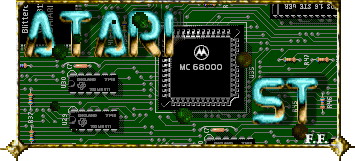
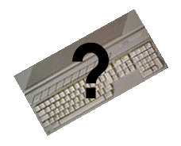

|
|
||
|  | ||
Le ST était une machine conçue par Shiraz Shivji et produit par Atari Corporation dans les années 85-86. A l'époque il éxistait deux modèles : le 130 ST et le 520 ST avec un système d'exploitation qui devait être chargé depuis une disquette. Le 520 ST était équipé de 512 Ko de RAM ainsi qu'une alimentation et un lecteur de disquette externes. Fin 1986 apparut le 520 STF, cet ordinateur innovait de part son autonomie (c'est un 520 ST avec les périphériques rassemblées dans le même boitier "tout-en-un") et éxistait dans une version avec 1 Mo de RAM : le 1040 STF. Cette nouvelle série possédait un systême d'exploitation interne placé dans une ROM.
La vraie évolution du ST ce fait avec l'apparition du STE en 1989 : le son est amélioré grâce au DMA, une palette de couleur jusqu'à 4096 nuances, l'affichage graphique se trouve accélérré par un BLITTER et une mémoire vive extensible (support SIMM ou SIP) jusqu'à 4 Mo.

Le systême d'exploitation est le GEMDOS, développé dans les années 1984-1985 par Digital Research, le rend compatible avec le PC. Il se charge principalement de la gestion de mémoire et des accès sur les différents supports disques.
Le TOS est une couche du systême (c'est lui qui commande avant tout les entrées/sorties), il comprend le GEMDOS, les fonctions du BIOS pour les entrées/sorties et du XBIOS qui gère les autres spécificitées de l'ordinateur comme par exemple la gestion de l'écran .
Le mode graphique est géré par le VDI qui se charge de l'affichage de dessin ou de texte en mode graphique.
L'AES est un environnement à fenetre, il fait partis du systeme d'exploitation : c'est lui qui affiche le bureau GEM de l'ordinateur et ses divers composants comme le menu déroulant.
L'Atari ST est équipé d'un processeur 16/32 bits MC68000 de Motorola, d'une mémoire morte (ROM) de 196 Ko à 1 Mo et d'une mémoire vive (RAM) de 512 Ko à 4 Mo.
Quattres principaux circuits intégrés entourent le MC68000 :
- Le circuit GLUE sert à décoder la zone d'adressage de la RAM et des circuits périphériques.
- Le circuit MMU assure la gestion de la mémoire vive et de son adressage mais aussi de la gestion de la RAM vidéo.
- Le circuit SHIFTER envoit des signaux au moniteur. Il lit les informations sur la RAM vidéo. Il gère entre autre la résolution de l'écran et ses couleurs.
- Le circuit DMA contrôl principalement les unitées de disquettes et disques durs tout en assurant le transfert de données.
Les autres circuits intégrés sont :
- Le controleur de disquette WD 1772 (dit FDC).
- Le circuit MFP gère les entrées/sorties du port RS232.
- Les 2 circuits ACIA 6850 :
- l'un gère l'interface du port MIDI.
- l'autre communique avec le processeur 6301 du clavier.
- Le circuit son YM-2149 de YAMAHA.
- Le BLITTER qui accélère les transferts de blocs de bits (notament le graphisme).
Glossaire |
|
|---|---|
| ACIA | Asynchronous Communications Interface Adapter |
| AES | Application Environnement System |
| BIOS | Binary Input/Output System |
| DMA | Direct Memory Access |
| DOS | Disk Operating System |
| FDC | Floppy Disk Controller |
| GEM | Graphics Environnement Manager |
| GEMDOS | Gem Disk Operating System |
| MFP | Multi Fonction Peripheral |
| MMU | Memory Manager Unit |
| RAM | Random Access Memory |
| ROM | Read Only Memory |
| ST | Sixteen Thirty-two bits |
| TOS | The Operating System |
| VDI | Visual Display Interface |
| XBIOS | eXtended BIOS |